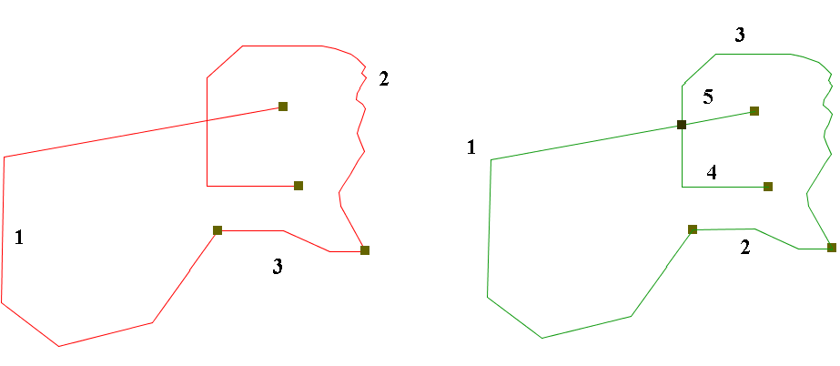

Исправление геометрии
Эта операция приводит исходный слой в состояние корректной линейной топологии.
"Корректная линейная топология" означает, что этот слой не должен иметь псевдоузлов (т.е. линейные объекты могут пересекаться исключительно в узлах и крайних точках).

Когда этот процесс находит псевдоузел, он разбивает пересекающиеся линии и создает четыре новых линии, которые пересекаются в точке.